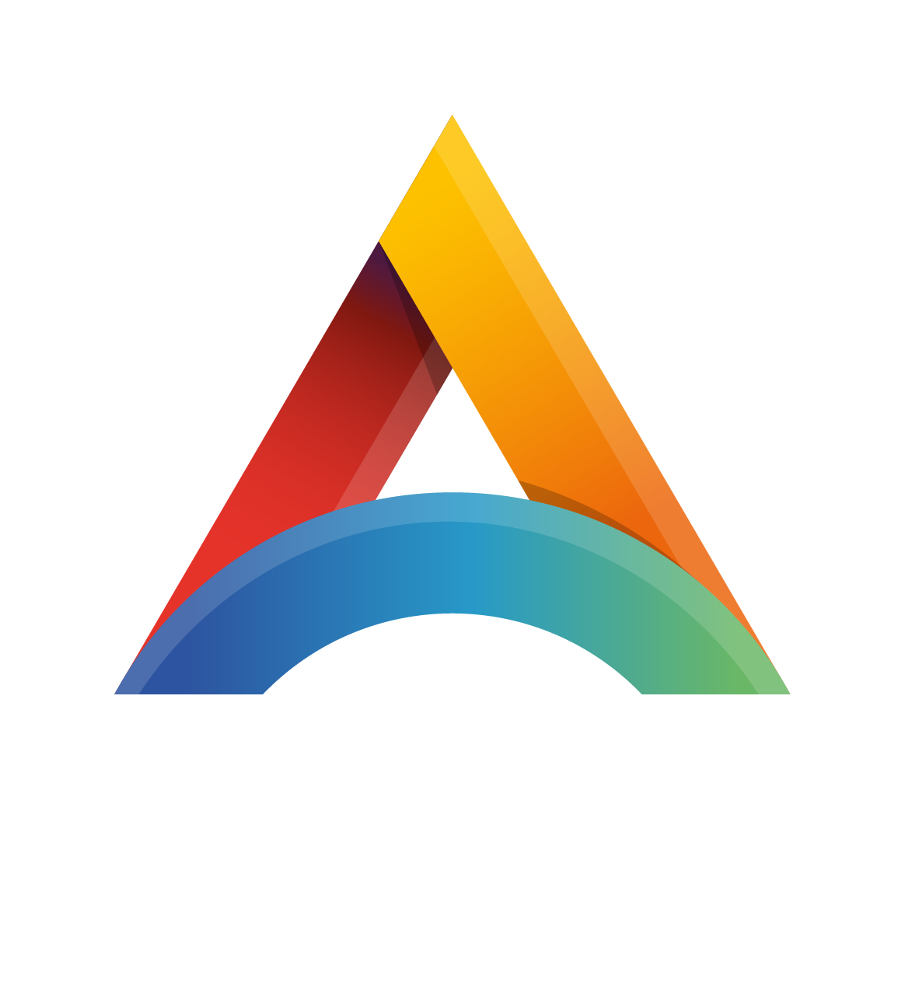

Fifth edition · 2023 – 2027
The training workshop organized by the Atlantic International Research Centre (AIR Centre) aims at developing the computer programming skills of those working on Earth Observation, including the members of the AIR Centre and other laboratories.
To stimulate collaboration beyond the training, the workshop is in person (full week). However, due to the high level of interest, remote participation is also possible. Remote participants will be able to watch the sessions live. Remote active participation is possible but limited to text chat.
The topics covered include acquisition, processing, visualization, and classification of Earth Observation data, using the Julia programming language.
The training workshop will emphasize practical activities including the use of datasets, libraries/packages, automated workflows, Artificial Intelligence (AI), and classification algorithms. Theory-oriented sessions will introduce the concepts and hands-on activities.
Earlier editions used the term “Global Workshop”; from 2026 onward, “International” is used to more accurately describe the format of the event.
2027 marks the fifth edition. The program is organized into thematic days, so that each day builds a coherent line of work rather than covering unrelated topics.
The open-source Julia language is relatively recent. It was created at the Massachusetts Institute of Technology (MIT), first released in 2012, and reached the v1.0 milestone in 2018. Julia has a vocation for high-performance scientific computing, making it today’s ideal choice to work on resource-intensive datasets such as the Earth Observation ones.
Mutual benefits expected to arise from the collaboration of the AIR Centre and the Julia community include:
Tentative agenda. Some Sessions' details are to be confirmed.
The workshop will encompass different levels of expertise, from beginner to advanced, with a focus on Earth Observation concepts and programming skills.
Plenary sessions - Cross-disciplinary training focused on theory and high-level concepts. These include the presentation of novel EO datasets i.e. satellite data, ocean models, and model products; processing & visualization techniques as well as available tools and packages. The first goal is to learn about new datasets and sources, libraries, packages, techniques, and implementation details. A secondary aim of this module is to identify gaps in the EO domain and opportunities to close those gaps using the Julia programming language.
Hands-on sessions - These modules focus on concrete objectives, such as data acquisition, processing and visualization techniques. They are designed to bridge conceptual understanding and real-world application through extended, hands-on tutorials. Through these tutorials, attendees are introduced to performing common geospatial tasks in Julia, using established and emerging geospatial packages.
Hackathons - Sessions that bring together Julia developers to enhance collaboration on EO applications and software development. These are hands-on sessions in which participants work towards a specific objective using a shared dataset.
Expert hour - Experts remain in the room for informal conversations and discussions with the in-person participants.
Each day is built around a theme: foundations and the geospatial stack, SAR and radar, machine learning and SciML, ocean modeling, and a closing day of hackathons. Sessions run in 30-minute slots; longer sessions occupy consecutive slots.
Please be aware that online sessions will not be available on Friday, as this day is specifically designed for in-person participation only.
Timezone: UTC +0; GMT +0; WET
09:00 – 09:10 Welcome and program presentation. Mr. João Pinelo - AIR Centre
09:10 – 09:20 Welcome from the AIR Centre. Mr. Miguel Miranda - AIR Centre
09:20 – 09:30 Luso-American collaboration. FLAD (to be confirmed)
09:30 – 10:00 Julia in production: deployment and maintenance. Mr. Avik Sengupta
10:00 – 10:30 Julia at Deltares, one year on: what passed the trial and what did not. Mr. Martijn Visser
10:30 – 11:00 Coffee break.
11:00 – 11:30 NOAA Open Data Dissemination: petabyte-scale Earth system data in the cloud. Mr. Denis Willett
11:30 – 12:00 Data cubes and Zarr: large N-dimensional raster arrays on disk. Mr. Felix Cremer
12:00 – 13:00 Lunch break.
13:00 – 13:30 HyperSignal.jl: reactive web interfaces in pure Julia, server-rendered. Mr. João Gonçalves
13:30 – 14:00 The Julia geospatial stack. Mr. Anshul Singhvi
14:00 – 14:30 AtlanticCloud.jl: typed access to a transatlantic Earth Observation data infrastructure. Mr. João Pinelo
14:30 – 15:00 Interactive visualization with Makie and Bonito. Mr. Simon Danisch
15:00 – 15:30 Coffee break.
15:30 – 16:00 Julia on shared HPC: depots, MPI, SLURM. Mr. Amit Ruhela (remote)
16:00 – 16:05 The ATLAS ask. Mr. João Pinelo
16:05 – 17:00 Expert hour.
18:00 – 20:00 Networking cocktail.
Timezone: UTC +0; GMT +0; WET
09:00 – 10:00 InSAR: theory, interferogram processing, and applications to Earth science. Mr. Alexandre Lasalarie
10:00 – 10:30 Atlantic Land Monitoring: an InSAR deformation service. Mr. Alexandre Lasalarie & Mr. Arun Shukla
10:30 – 11:00 Coffee break.
11:00 – 12:00 Hands-on Session: InSAR processing (part 1). Mr. Alexandre Lasalarie
12:00 – 13:30 Lunch break.
13:30 – 14:00 Hands-on Session: InSAR processing (part 2). Mr. Alexandre Lasalarie
14:00 – 15:00 The Internal Waves Service: SAR classification at archive scale. Mr. João Pinelo
15:00 – 15:30 Coffee break.
15:30 – 16:00 SAR time series and change detection with Sentinel-1. Mr. Felix Cremer
16:00 – 17:00 Expert hour.
Timezone: UTC +0; GMT +0; WET
09:00 – 09:30 Introduction to scientific machine learning. Mr. Chris Rackauckas
09:30 – 10:00 Code agents for modeling and simulation, a year on. Mr. Chris Rackauckas
10:00 – 10:30 Hands-on Session: SciML — surrogates and universal differential equations (part 1). Mr. Chris Rackauckas
10:30 – 11:00 Coffee break.
11:00 – 12:00 Hands-on Session: SciML — surrogates and universal differential equations (part 2). Mr. Chris Rackauckas
12:00 – 13:30 Lunch break.
13:30 – 14:00 Generative deep learning for inverse problems in oceanography. Mr. Alexander Barth
14:00 – 15:00 Spontaneous group activities.
15:00 – 16:00 Expert hour, with coffee served in the room.
Timezone: UTC +0; GMT +0; WET
09:00 – 10:00 Internal tides and internal wave dynamics: global high-resolution models and the Azores. Mr. Maarten Buijsman & Mr. Jorge Magalhães
10:00 – 10:30 MITgcm.jl, ClimateModels.jl, and ocean robots. Mr. Gaël Forget
10:30 – 11:00 Coffee break.
11:00 – 11:30 Data assimilation and DIVAnd for ocean climatologies. Mr. Alexander Barth
11:30 – 12:00 From regional model to operational twin: what is still missing for the Azores. Ms. Manuela Juliano
12:00 – 13:30 Lunch break.
13:30 – 14:00 The Julia platform: the Internal Waves Service, from detection to delivery. Mr. João Gonçalves, Mr. João Pinelo & Ms. Adriana Ferreira
14:00 – 15:00 Hands-on Session: MITgcm.jl and digital twins for ocean robots. Mr. Gaël Forget
15:00 – 15:30 Coffee break.
15:30 – 16:30 Panel: model-data fusion for the Azores region. Moderator: Mr. Alexander Barth; Mr. Maarten Buijsman, Mr. Gaël Forget, Ms. Manuela Juliano, Ms. Adriana Ferreira, Mr. Jorge Magalhães & Mr. João Pinelo
16:30 – 16:35 Closing of online sessions. Mr. João Pinelo
16:35 – 17:00 Expert hour.
Timezone: UTC +0; GMT +0; WET
09:00 – 10:30 Hackathon Session One, opening with the theme briefing. theme to be defined
10:30 – 11:00 Coffee break.
11:00 – 12:00 Hackathon Session One (continued).
12:00 – 13:30 Farewell lunch.
13:30 – 15:00 Hackathon Session Two. theme to be defined
15:00 – 15:30 Coffee break.
15:30 – 16:00 Hacked a ton: the week’s spontaneous outcomes.
16:00 – 16:15 JuliaEO27 farewell speech. Mr. João Pinelo
The following speakers have been selected from the Julia community to participate in this training event. The speakers involve a mix of seasoned and young/aspiring scientists. The selection was based on the level of skill and commitment demonstrated, with contributions to the EO software packages which are most needed for the work of the AIR Centre and partner institutions.
Additionally, there are a small group of scientists from the AIR Centre and partner institutions.
Invitations for the 2027 edition are in progress. Speaker entries will be published here as they are confirmed.
The workshop will take place in the Lisbon area, Portugal. The venue is being confirmed and will be announced here.
Invited speakers will be hosted at the event venue.
Arrangements for in-person participants who wish to stay at the same hotel, including preferential rates, will follow once the venue is fixed.
João Pinelo, Chris Rackauckas, Adriana Ferreira.
